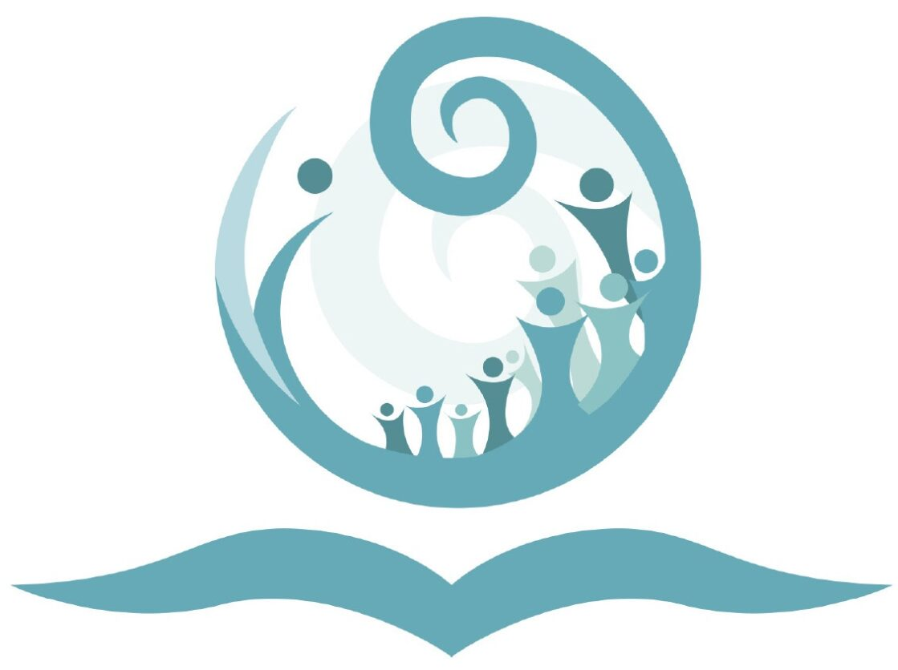
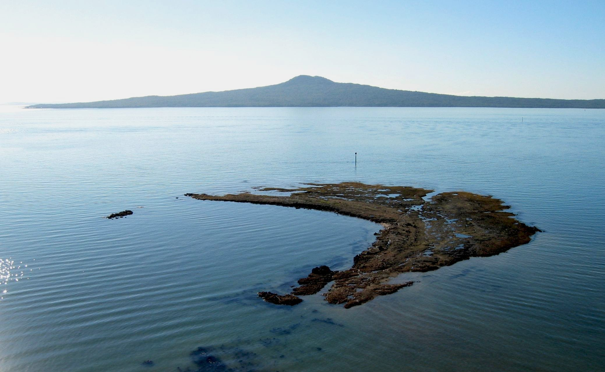

Pupuke Kauhi Ako



Our Vision
To create a rich, collaborative culture that unites kura (schools), pouako (teachers), ākonga (students), and whānau to work collectively on common goals for the benefit of all.
Our Waiata
The waiata, written by Johnny Waititi, celebrates the important places and people of our community. We acknowledge the land, water, and iwi that shape our identity. By learning and singing this waiata, we honour the history of Rangitoto Island, Waitematā Harbour, Ngāti Paoa, and Lake Pupuke.